Overview
An accessibility-first redesign, launched May 2023.
The objective was to design an accessibility-responsive, mobile-first website for Gong cha, an international franchise brand specializing in the highest-quality tea — a site accessible to the general public regardless of physical or cognitive abilities. Accessibility is also good business: it expands audience reach, boosts brand image and customer loyalty, and mitigates legal risk.
To investigate how visually impaired users navigate with screen readers, we conducted thorough user research following the User-Centered Design process — five 1-on-1 interviews with subject-matter experts, visually impaired individuals, franchisees and milk-tea buyers, plus 39 survey responses. Five personas guided the work: visually impaired users, tea enthusiasts, potential franchisees, event/wedding planners, and job seekers.
Problem
A site screen readers couldn’t parse — text baked into images, a carousel keyboards couldn’t reach, and 85% of visits arriving on mobile. Inaccessibility meant lost customers and legal risk.
Approach
Accessibility-first and mobile-first — research with visually impaired users (five interviews, 39 surveys, five personas) shaping 50+ WCAG-aligned, SEO-optimized pages.
Results
+251% sessions and −87% bounce rate in three months; the accessibility score climbed from 56% to 88%.
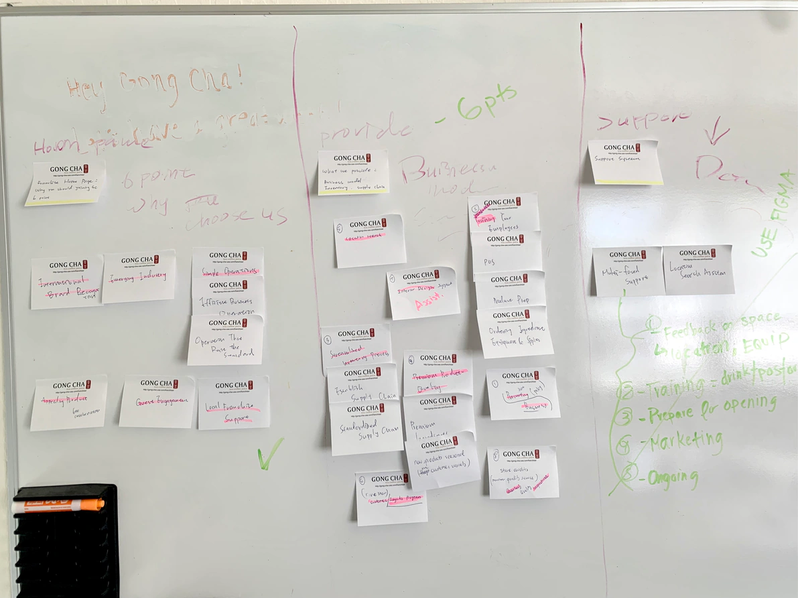
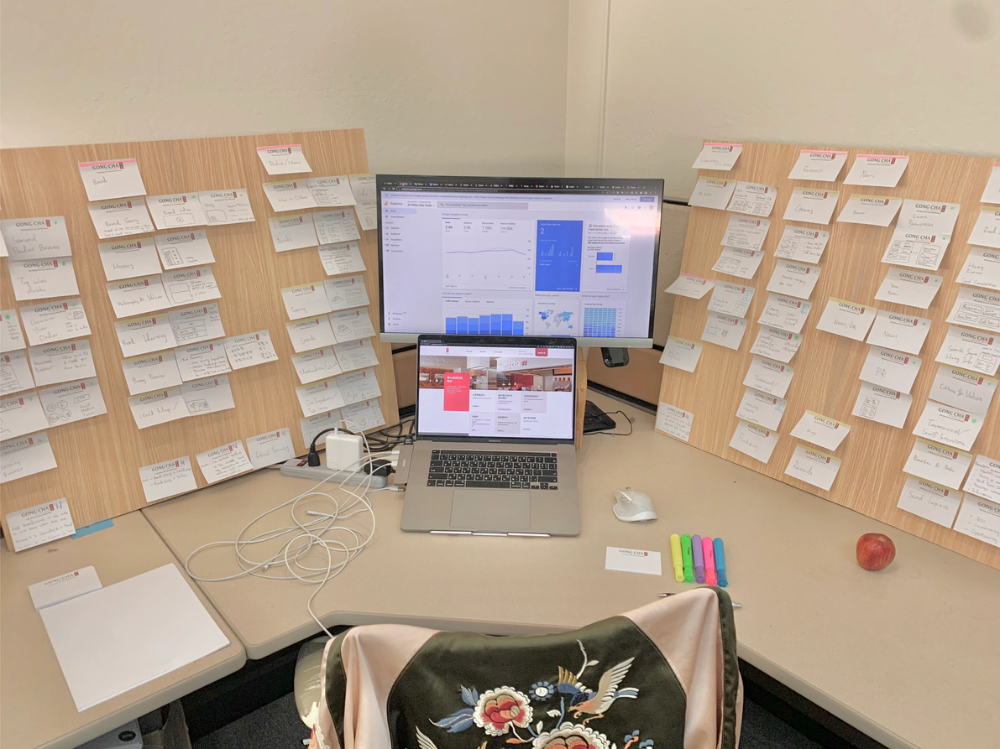
Results
Three months in, the numbers spoke.
I led the design team through an SEO-optimized, accessible responsive redesign, launching 50+ webpages. Per Google Analytics and SEMrush: sessions +251.69%, first-time users +280.51%, bounce rate −87.64%, page views +44.69%; CTR rose from 1.28% to 2.80% (+119%); search visibility jumped from 19.62% to 44.40%; mobile responsiveness drove a 34% traffic boost. The accessibility score climbed from 56% to 88% after fixing over 150 violations.
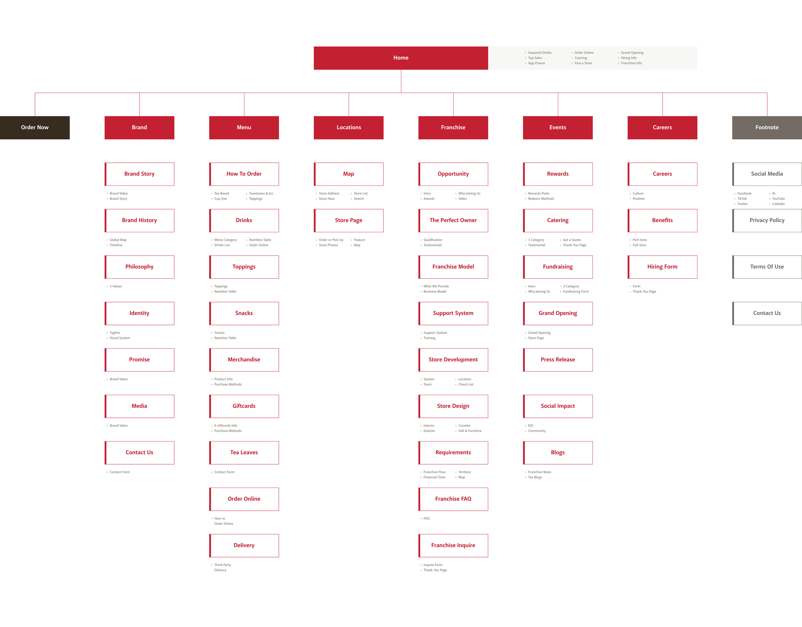
+251%
More sessions
Google Analytics, post-launch
+119%
CTR improvement
1.28% → 2.80% in three months
88%
Accessibility score
SEMrush, up from 56%
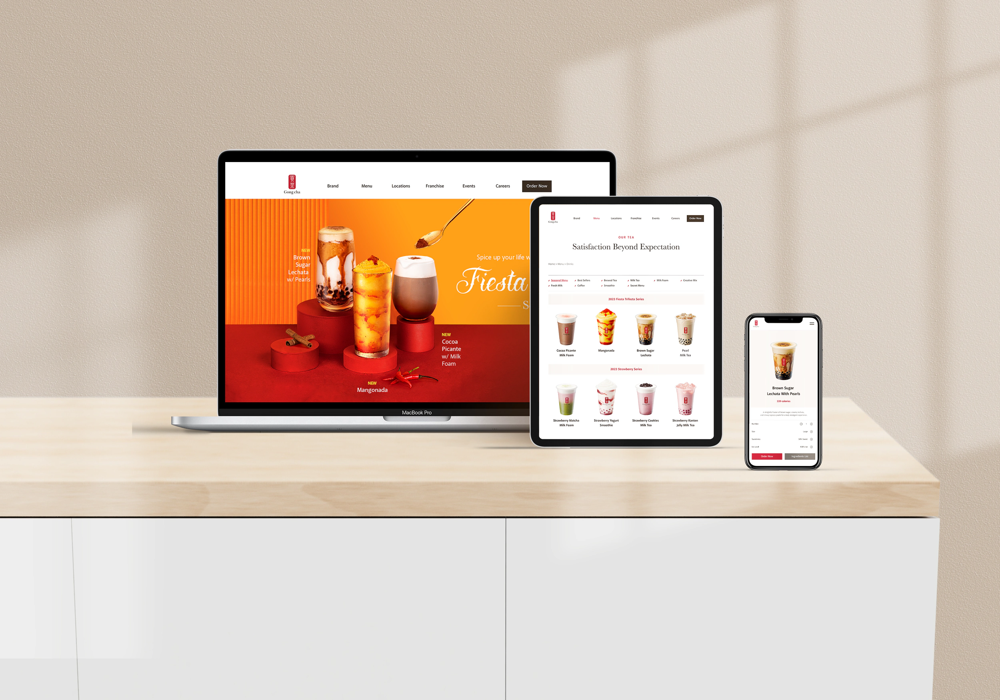
Key Decisions
Five pages, five accessibility decisions.
Landing — the rotating banner failed keyboard and screen-reader users, and 85% of visits were mobile. Solution: mobile-first — remove the carousel, move content into the scroll, and enforce color contrast, scalable type, alt text and accessible forms throughout.
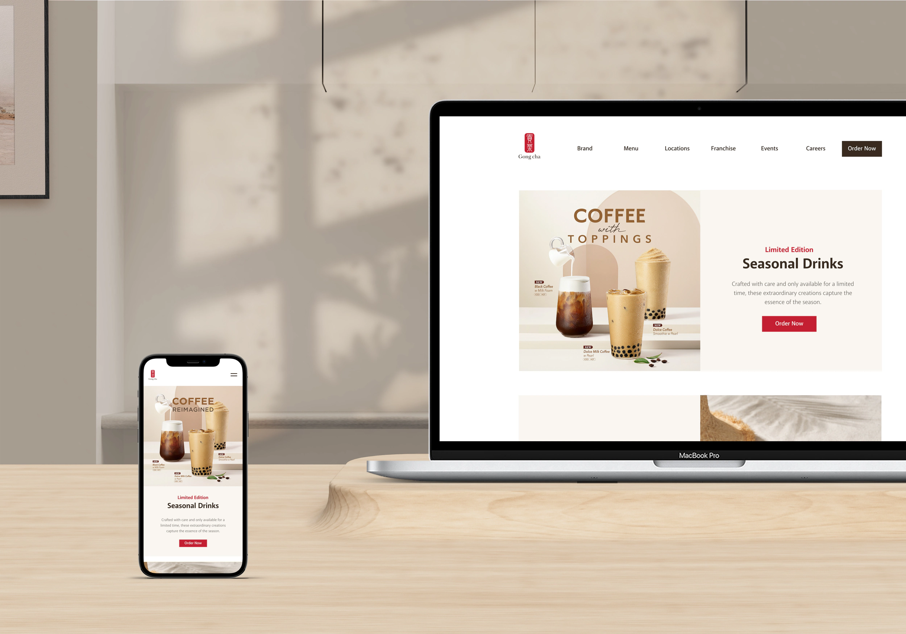
Brand — Gong cha still lacked brand resonance with American audiences, and Asian cultural elements in the identity widened the gap. Solution: a comprehensive brand page — story, history, global expansion, identity system, philosophy and commitment, with a contact form.
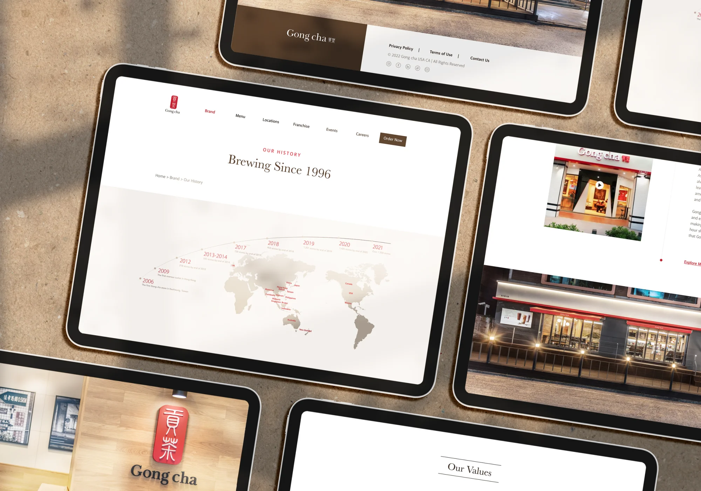
Menu — text baked into images was invisible to screen readers, and customers new to bubble tea didn’t know how to order. Solution: real web text with descriptive metatext instead of text-on-image; calorie, ingredient and allergen info; and a step-by-step visual “How to Order” guide.
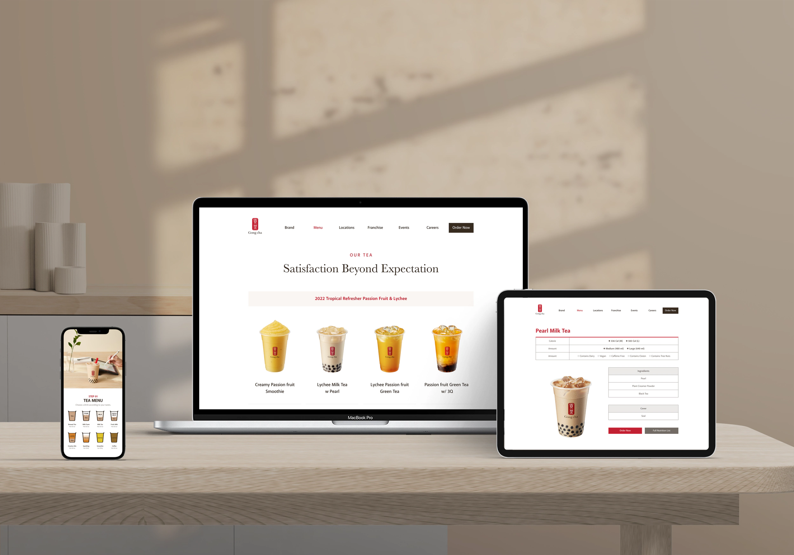
Locations — “Gong cha near me” ranks among the top queries, but the map’s dropdowns and filters stalled screen readers. Solution: dedicated per-store pages with photos and full details, and streamlined or removed filters.
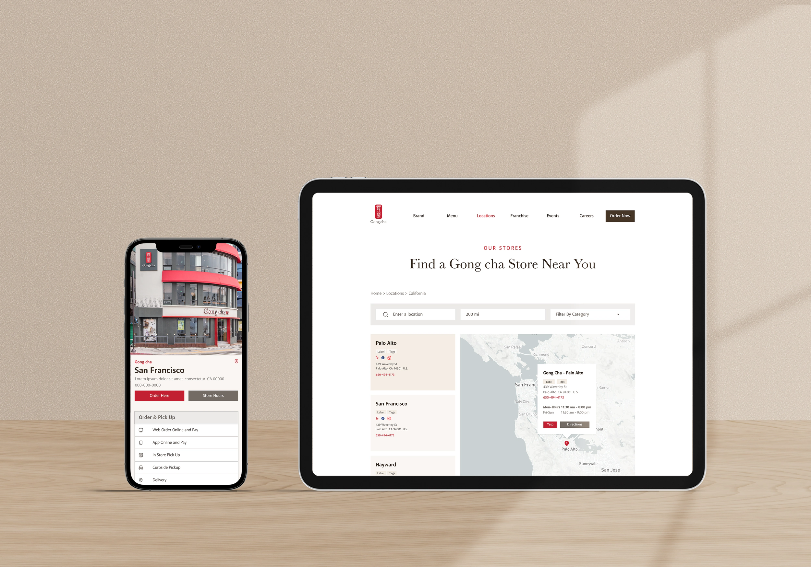
Franchise — competitor analysis plus expert and franchisee interviews surfaced nine decision factors (brand awareness, financials, training and more), which shaped nine pages from industry introduction to application form; a catering inquiry form gives staff early insight into events and improves conversion.
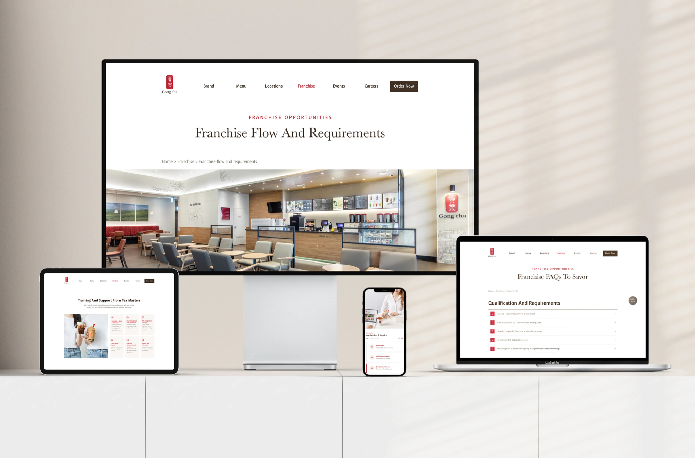
Of the nine decision factors, financials weighed heaviest — so franchise costs became a transparent, itemized table instead of a brochure PDF.
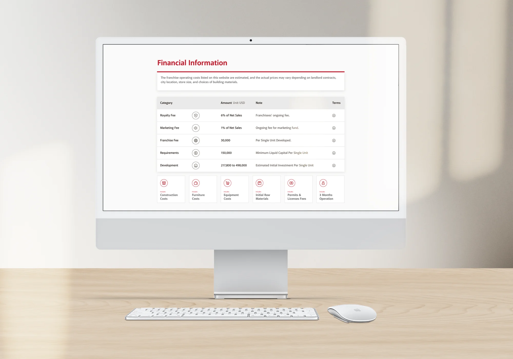
And because accessible forms are only half the loop, every submission ends in a clear confirmation.
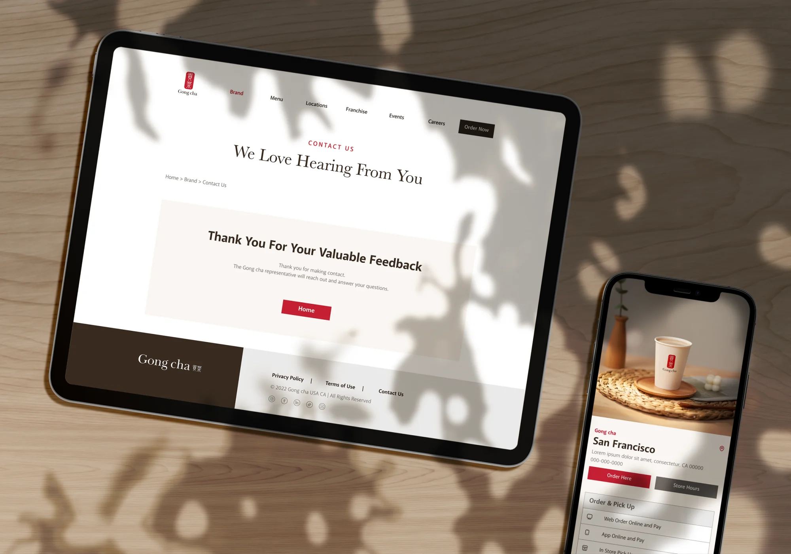
Learn More